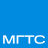
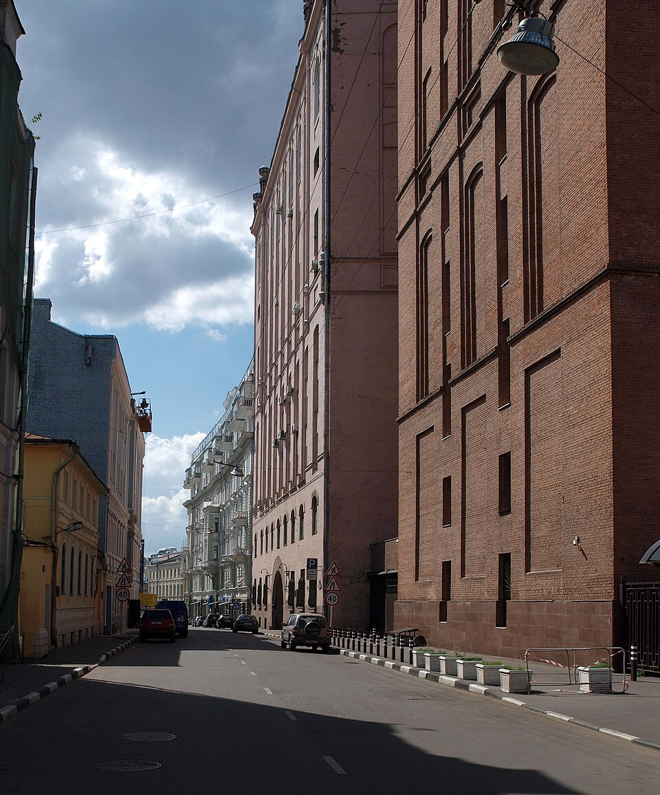

Краткая справка
МГТС исторически развивала городскую телефонную связь Москвы, а затем стала оператором фиксированного доступа, интернет-услуг и цифровых сервисов для жителей, бизнеса и городских организаций. Компания ведёт историю от первых московских телефонных станций конца XIX века; современная публичная компания была зарегистрирована в 1990-е годы и постепенно вошла в экосистему МТС.
Основное направление деятельности - обслуживание городской телекоммуникационной сети. В разные годы МГТС строила медные линии, развивала цифровые АТС, массово переводила абонентов на оптику GPON и расширяла набор услуг: домашний интернет, телефония, телевидение, видеонаблюдение, облачные и корпоративные решения. Для Москвы это не просто коммерческий оператор, а заметная часть городской инженерной среды.
Главный фокус компании - надёжная связь в плотной городской застройке. Поэтому МГТС работает с инфраструктурой домов, подъездов, распределительных узлов и магистральных каналов. По мере интеграции с МТС бренд стал использовать общие визуальные признаки группы: красный цвет, лаконичная типографика и круглый знак МТС.


История развития сети
Первые телефонные линии Москвы появились как технологическая новинка для государственных учреждений, предприятий и состоятельных частных абонентов. С ростом города телефонная сеть стала массовой услугой: требовались новые станции, кабельные трассы, ремонтные службы и единые правила эксплуатации. МГТС сформировалась именно как городская сеть, способная поддерживать связь на масштабе мегаполиса.
В советский период телефон воспринимался как базовая инфраструктура. Для оператора это означало постоянное расширение номерной ёмкости, строительство узлов связи и обслуживание огромного количества абонентских линий. Постепенно аналоговое оборудование заменялось цифровым, а качество соединений росло вместе с автоматизацией станций.
После перехода к рыночной модели связи компания стала конкурировать не только в телефонии, но и в доступе в интернет. Появились широкополосные услуги, домашние тарифы, комплексные предложения для квартир и офисов. Важным этапом стала модернизация сети на базе оптоволоконной технологии GPON: она позволила доставлять интернет, телевидение и телефонию по одному каналу с высокой пропускной способностью.
Для жителей
Домашний интернет, фиксированная телефония, цифровое ТВ, видеонаблюдение, сервисы умного дома и поддержка абонентов через общие каналы МТС.
Для бизнеса
Корпоративная связь, выделенные каналы, виртуальные АТС, номера, сервисы безопасности и решения для офисов с большим количеством рабочих мест.
Для города
Инфраструктура связи, узлы доступа, эксплуатация линий и технологическая база, необходимая для стабильной работы городской цифровой среды.
МГТС в группе МТС
Сегодня МГТС тесно связана с брендом МТС. Для клиентов это выражается в едином стиле обслуживания, общих цифровых каналах, пакетных предложениях и использовании узнаваемой красной айдентики. При этом юридическая и инфраструктурная роль МГТС остаётся важной: компания владеет и обслуживает значимый пласт московской фиксированной сети.
Интеграция с крупной телеком-группой помогает развивать услуги быстрее. Там, где раньше фиксированная телефония была самостоятельным продуктом, теперь она включается в общий набор цифровых сервисов. Абоненту нужен не отдельный кабель или номер, а стабильная связность: интернет для работы, видеосвязь, онлайн-кинотеатры, удалённое обучение, домашние устройства и корпоративные приложения.
Официальные сведения о раскрытии информации и корпоративных событиях публикуются на профильных ресурсах эмитента и в карточках ПАО «МГТС». Для учебного сайта использованы открытые сведения об операторе, его истории и направлениях деятельности.